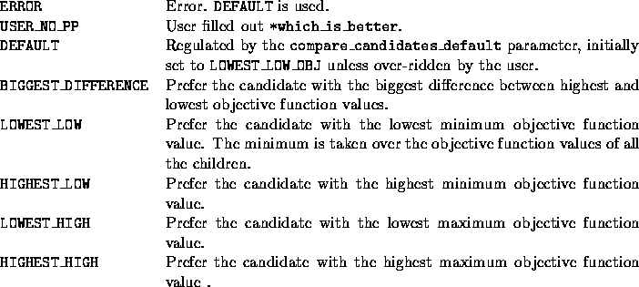

int user_compare_candidates(void *user, branch_obj *can1, branch_obj *can2,
int *which_is_better)
By the time this function is invoked, the children of the current
search tree node corresponding to each branching candidate have been
pre-solved, i.e., the objval, termcode, iterd, and
feasible fields of the can1 and can2 structures are
filled out. Note that if the termination code for a child is
D_UNBOUNDED or D_OBJLIM, i.e., the dual problem is unbounded
or the objective limit is reached, then the objective value of that
child is set to MAXDOUBLE / 2. Similarly, if the termination
code is one of D_ITLIM (iteration limit reached),
D_INFEASIBLE (dual infeasible) or ABANDONED (because of
numerical difficulties) then the objective value of that child is set
to that of the parent's.
Based on this information the user must choose which candidate he
considers better and whether to branch on this better one immediately
without checking the remaining candidates. As such, there are four
possible answers: FIRST_CANDIDATE_BETTER,
SECOND_CANDIDATE_BETTER,
FIRST_CANDIDATE_BETTER_AND_BRANCH_ON_IT and
SECOND_CANDIDATE_BETTER_AND_BRANCH_ON_IT. An answer ending with
_AND_BRANCH_ON_IT indicates that the user wants to terminate
the strong branching process and select that particular candidate for
branching.
There are several default options. In each of them, objective values of
the pre-solved LP relaxations are compared.

